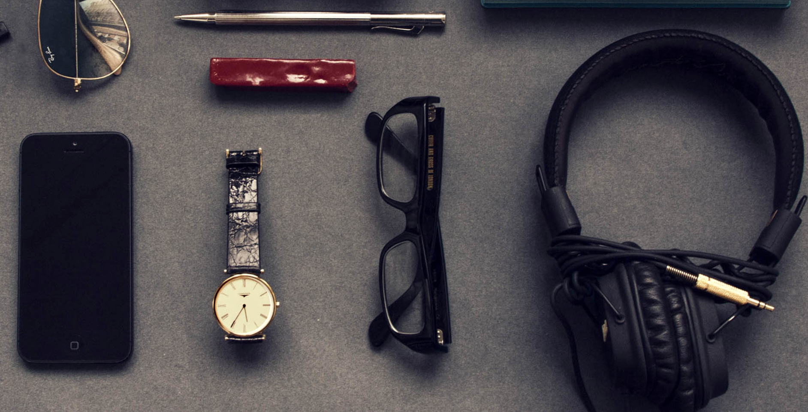

<!DOCTYPE html>
<html lang="en">
<head>
  <meta charset="UTF-8">
  <meta name="viewport" content="width=device-width,user-scalable=no" />
  <title>Document</title>
  <style type="text/css">
    #box {
      width: 200px;
      height: 200px;
      background: Red;
      color: #fff;
      font-size: 20px;
    }
  </style>
</head>
<body>
<div id="box"></div>
<script type="text/javascript">
  var box = document.querySelector('#box');
  window.addEventListener('devicemotion', function(e) {
    var motion = e.accelerationIncludingGravity;
    var x = motion.x.toFixed(3);
    var y = motion.y.toFixed(3);
    var z = motion.z.toFixed(3);
    box.innerHTML = "x:"+x;
    box.innerHTML += "<br/>y:"+y;
    box.innerHTML += "<br/>z:"+z;
  });
</script>
</body>
</html>

<!--<!DOCTYPE html>-->
<!--<html lang="en">-->

<!--<head>-->
<!--  <title>DeviceOrientationEvent</title>-->
<!--  <meta charset="UTF-8"/>-->
<!--</head>-->

<!--<style>-->
<!--  body {margin: 0; padding: 0;}-->
<!--  html, body { height: 100%;}-->
<!--  .view { position: relative; width: 100%;height: 100%;overflow: hidden;}-->
<!--  .big-bg {  height: 120%;position: relative; display: inline-block; }-->
<!--  .big-bg img {  height: 100%;}-->
<!--</style>-->

<!--<body>-->
<!--  <div class="view">-->
<!--    <div class="big-bg" style="top: -66px; left: -453px;">-->
<!--      -->
<!--    </div>-->
<!--  </div>-->
<!--</body>-->

<!--<script type="text/javascript">-->
<!--  function readyFn() {-->
<!--    'use strict';-->
<!--    var dom = document.querySelector('.big-bg'),-->
<!--      img = dom.querySelector('img');-->
<!--    var IMG_W = img.width,-->
<!--      IMG_H = img.height;-->
<!--    var WIN_W = document.documentElement.clientWidth,-->
<!--      WIN_H = document.documentElement.clientHeight;-->
<!--    var timefragment = 0,               // 时间片计时-->
<!--      nowts = 0;                      // 当前时间-->
<!--    // 设置默认的left/top-->
<!--    dom.style.top = -(IMG_H - WIN_H) / 2 + 'px';-->
<!--    dom.style.left = -(IMG_W - WIN_W) / 2 + 'px';-->
<!--    window.addEventListener('deviceorientation', function (evt) {-->
<!--      nowts = new Date().getTime();-->
<!--      // 控制时间片-->
<!--      if (nowts  - timefragment > 37) {-->
<!--        timefragment = nowts;-->
<!--        var alpha = evt.alpha,          //垂直于屏幕的轴 0 ~ 360-->
<!--          beta = evt.beta,            //横向 X 轴 -180 ~ 180-->
<!--          gamma = evt.gamma;          //纵向 Y 轴 -90 ~ 90-->
<!--        var top = parseInt(dom.style.top, 10) || 0,-->
<!--          left = parseInt(dom.style.left, 10) || 0;-->
<!--        var _top, _left;-->
<!--        _top = top + (beta / 180 * 30);-->
<!--        _left = left + (gamma / 90 * 30);-->
<!--        _top = _top >= 0 ? 0 : (_top < (WIN_H - IMG_H) ? (WIN_H - IMG_H) : _top);-->
<!--        _left = _left >= 0 ? 0 : (_left < (WIN_W - IMG_W) ? (WIN_W - IMG_W) : _left);-->
<!--        dom.style.top = _top + 'px';-->
<!--        dom.style.left = _left + 'px';-->
<!--      }-->
<!--    }, false);-->
<!--  }-->

<!--</script>-->

<!--</html>-->